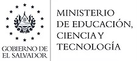
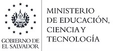

Complejo educativo colonia el milagro Código 11482
Complejo educativo colonia el milagro Código 11482
HISTORIA
San Salvador, 20 de octubre de 1998
Hoy se ha emitido el acuerdo que literalmente dice:
“Acuerdo N° 15- 1945. – El Órgano ejecutivo de la República de El Salvador en el Ramo de la Educación, Considerando: I) Que el Art. 111 de la Ley de la Carrera Docente dispone que los Centros Educativos
que funcionen con diferente denominación en cada jornada de trabajo, deberán en un plazo no mayor de dos
años adoptar una sola denominación; y en caso de desacuerdos en esa denominación y concluido
el plazo antes indicado, será el Ministerio de Educación el que hará la denominación correspondiente;
II) Que dentro de la Organización Administración actual de los Centros Educativos Oficiales, se emplean
diversidad de denominaciones en su naturaleza en su naturaleza, por lo que es necesario simplificarlas;
III) Que mediante Acuerdo N° 15-2338 emitido por este Ministerio el 1 de noviembre de 1997, se oficializa
e implementa la denominación de los Centros Educativos Oficiales con las expresiones: A) “COMPLEJO
EDUCATIVO”: si en la Institución se atiende desde Parvulario hasta Nivel Medio; B) “CENTRO ESCOLAR”:
cuando en el mismo se atiende desde Parvularia hasta y/o Primero
a Sexto grado o Parvularia y/o Primero hasta Noveno Grado o desde Primer Grado hasta Bachillerato o desde Tercer Ciclo a Bachillerato.
Los Institutos Nacionales, las Escuelas de Educación Parvularia y las Escuelas de Educación Especial,
continuarán siendo identificadas como tales; IV) Que en la infraestructura educativa ubicada en COLONIA
EL MILAGRO CALLE PRINCIPAL No.15, SAN MARCOS, SAN SALVADOR, funcionan los siguientes Centros
Educativos Oficiales: E.R.M. UNIF. COLONIA EL MILAGRO No.2. Código N° 0612023; E.R.M.U. COLONIA EL
MILAGRO No.1. Código N° 0612015; T.C.E.N.B. ANEXO A LA ERMU. COLONIA EL MILAGRO Código
N°0612901; E.N.A. COLONIA EL MILAGRO Código N°0612031; V) Que según Certificación de Acta N° 101
de fecha 26 de agosto de 1998 la Comisión Nominadora de Centros Educativos, aprobó la nominación del
Centro Educativo Oficial como: CENTRO ESCOLAR “COLONIA EL MILAGRO”; VI) Que para unificar su
naturaleza se implementa la denominación con la expresión CENTRO ESCOLAR, a los Centros Educativos
antes mencionados. POR TANTO, con base a las razones expuestas y a las facultades que la Ley les
concede, ACUERDA: A) Autorizar a partir del 1 de octubre de 1998, la adopción de una sola denominación
y un solo nombre al Centro Educativo oficial: CENTRO ESCOLAR “COLONIA EL MILAGRO” ubicado en
COLONIA EL MILAGRO CALLE PRINCIPAL No. 15. SAN MARCOS, SAN SALVADOR, que funcionará con los
niveles: EDUCACION PARVULARIA, MATUTINO; EDUCACION PARVULARIA, VESPERTINO; EDUCACION BASICA,
MATUTINO; EDUCACION BASICA, VESPERTINO; EDUCACION BASICA, NOCTURNO; el cual será identificado
a partir de la misma fecha con el Código: 11482. B) El personal que ha venido fungiendo en cada uno de los
centros educativos que se integran mediante el presente acuerdo serán refrendados en su
nombramiento a partir de 1999, en el centro escolar integrado con el Código 11482 que les ha sido
asignado. En lo que corresponde al presente año continuarán cobrando sus respectivos salarios
en las planillas y códigos actuales. C) Para efectos de expedición de títulos, certificados y demás documentación
relativa al centro integrado estarán a cargo del Director Único. COMUNÍQUESE”. (Rubricado por el Señor
Presidente de la Republica). La Ministra de Educación (f) A.C. PÉREZ.
El que transcribo para su conocimiento y efectos legales consiguiente.